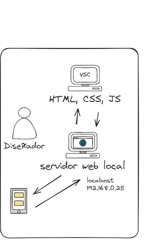

El diseñador web trabaja desde su computadora, la cual tiene un editor de código como Visual Studio Code y con este hace HTML, CSS y JS. Después el diseñador convierte su computadora en un servidor web local privado.
Así vamos a probar que nuestro código que hemos escrito funciona bien. En caso de que no funcione, lo vuelvo a editar y sigo trabajando.
Una vez que tenemos esto funcionando donde el diseñador le gusta lo que hizo, lo vamos a probar en nuestros dispositivos: mi computadora o móvil.